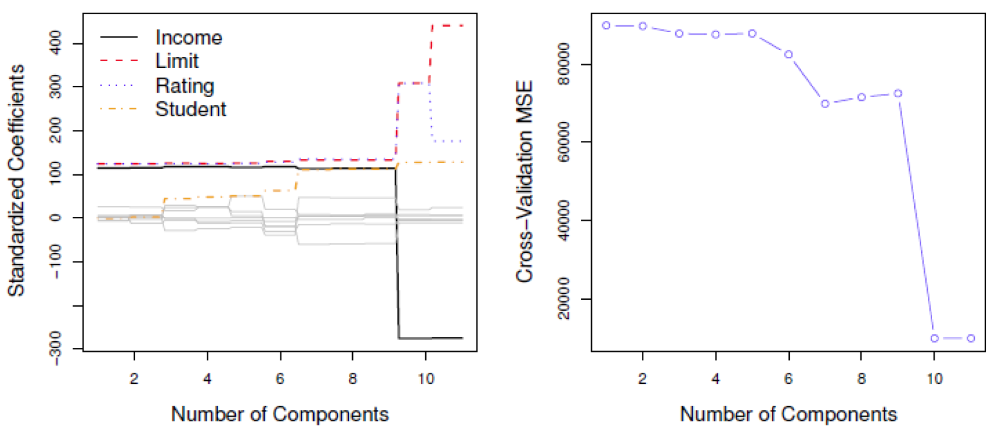

Fundamentals of
Data Analytics and
Predictions
Regularization
Xi (Rossi) LUO
Department of Biostatistics and Data Science
School of Public Health
The University of Texas Health Science Center at Houston
Outline
- Linear Predictors
- Ridge Regression
- Lasso
- Elastic Net
Linear Predictors
- Input: $X=x_1, \dots, x_p$
- Output: $Y$
- The linear regression model is $Y=\beta_0+\sum_{j=1}^{p}X_j\beta_j+\epsilon$
- To find least squares solution, want to minimize $E(y-f(x))^2$
- Approximated by the empirical loss $RSS(\beta)=\sum_{i=1}^{i=N}(y_i-f(x_i))^2$
- Has closed-form solution $\hat \beta=(X'X)^{-1}X'y$
Linear Model With Many Predictors —1
- Even though we have a linear model that seems to fit the data well, we may still have some
problems.
- If we have many predictors, the prediction accuracy may not be optimal.
- If we have many predictors, interpretation may be difficult
Linear Model With Many Predictors —2
- Two possible solutions:
- Use a subset of the predictors
- Shrink some of the coefficients toward zero
Subset (Variable) Selection
- Consider a case where the true model is $Y=\beta_0+\beta_1X_1+\beta_2X_2+\epsilon$ and $X_1$ and
$X_2$ are almost perfectly correlated (co-linear)
- If we remove $X_2$ from the model, we can approximate the model by:
$Y=\beta_0+(\beta_1+\beta_2)X_1+\epsilon$ and get a good estimate of $Y$ estimating 2 parameters
instead of 3
- Estimate will be a bit biased but we may lower the variance considerably.
Simulated Example
- Consider fitting various subset models to a simulated example where the true model is a linear
model with 10 predictors and we observe 15 outcomes
- Select a number of covariates to include in the model, then look at all possible combinations of
covariates and pick one with the smallest RSS
- Apply to a training and test set
Prostate Data Example —1
- Outcome: prostate specific antigen (PSA)
- Covariates:
- lcavol(log cancer volume)
- lweight(log prostate weight)
- Age
- agelbph
- log(benign prostatic hyperplasia amount)
- svi(seminal vesicle invasion)
- lcp(log capsular penetration)
- gleasonscore
- % gleasonscores 4 or 5.
Subset (Variable) Selection Summary —1
- Pros:
- Easy to interpret
- Variable is either in or out
- Improved prediction error over the full model
- Cons:
- Has high variance
- How to choose the number of covariates to include?
- The choice of one covariate over an another can sometimes be a very arbitrary decision
(especially with correlated predictors)
Subset (Variable) Selection Summary —2
- We can think of the subset selection procedure as one that shrinks some of the coefficients to
0. What if we do this in a smoother way?
- Instead, can shrink the regression coefficients in a continuous manner (instead of multiplying
each coefficient by 0 or 1, can multiply by a number between 0 and 1
- Methods include ridge regression, the lasso, least angle regression, and elastic nets
Ridge Regression —1
- Recall that the least squares fitting procedure estimates $\beta_0, \beta_1, \dots, \beta_p$
using the values that minimize
$RRS(\beta)=\sum_{i=1}^{n}(y_i-\beta_0-\sum_{j=1}^{p}\beta_jx_{ij})^2$
- In contrast, the ridge regression coefficient estimate $\hat\beta^R$ are the values that
minimize
$\sum_{i=1}^{n}(y_i-\beta_0-\sum_{j=1}^{p}\beta_jx_{ij})^2+\lambda\sum_{j=1}^{p}\beta_j^2=RSS+\lambda\sum_{j=1}^{p}\beta_j^2$
where $\lambda\ge0$ is a tuning parameter, to be determined separately
Ridge Regression —2
- As with least squares, ridge regression seeks coefficient estimates that fit the data well, by
making the RSS small
- However, the second term, $\lambda\sum_{j=1}^{p}\beta_j^2$ called a shrinkage
penalty, is small when $\beta_1, \dots, \beta_p$ are close to zero, and so it has
the effect of shrinking the estimates of $\beta_j$ towards zero
- The tuning parameter $\lambda$ serves to control the relative impact of these two terms on the
regression coefficient estimates
- Selecting a good value for $\lambda$ is critical, cross-validation is used for this
Scaling Predictors
- The standard least squares coefficient estimates are scale equivalent;
multiplying $X_j$ by a constant $c$ simply leads to a scaling of the least squares coefficient
estimates by a factor of $\frac{1}{c}$. In other words, regardless of how the jthpredictor is
scaled, $X_j\hat\beta_j$ will remain the same
- In contrast, the ridge regression coefficient estimates can change substantially when
multiplying a given predictor by a constant, due to the sum of squared coefficients term in the
penalty part of the ridge regression objective function
- Therefore, it is best to apply ridge regression after standardizing the
predictors, using the formula
$\tilde{x}_{ij}=\frac{x_{ij}}{\sqrt{\frac{1}{n}\sum_{i=1}^{n}(x_{ij}-\bar{x}_j)^2}}$
Why Ridge Regression Better Than Least Squares
-
Simulated data with $n=50$ observations and $p=45$ predictors, all having nonzero
coefficients.
-
Squared bias (black), variance (green) and test mean square error (purple) for the ridge
regression on a simulated dataset as a function of $\lambda$ and $\frac{\lVert
\hat{\beta}_\lambda^R \rVert_2}{\lVert \hat{\beta} \rVert_2 }$
-
The horizontal dashed line indicates the minimum possible MSE
-
The purple crosses indicate the ridge regression models for which the MSE is smallest
Comments on Ridge Regression
- History
- Andrey Tikhonov (Russian 1906-1993): Tikhonov regularization or Tikhonov-Phillips
regularization for ill-posed problem
- Arthur E. Hoerl(1962, 1970): Ridge regression
- Note that this helps problem when have many correlated variables since in a linear regression
model, the coefficients can exhibit high variance
- However, ridge regression includes ALL $p$ predictors (unlike subset selection)
The Lasso —1
- Ridge regression does have one obvious disadvantage: unlike subset selection, which will
generally select models that involve just a subset of the variables, ridge regression will
include all p predictors in the final model
- The Lasso is a relatively recent alternative to ridge regression that overcomes
this disadvantage. The lasso coefficients, $\hat{\beta}_\lambda^L$ minimize the quantity
$\sum_{i=1}^{n}(y_i-\beta_0-\sum_{j=1}^{p}\beta_jx_{ij})^2+\lambda \sum_{j=1}^{p}\mid\beta_j\mid
=RSS+\lambda\sum_{j=1}^{p}\mid\beta_j\mid$
- In statistical parlance, the lasso uses an $ℓ_1$ (pronounced “ell 1”) penalty instead of an
$ℓ_2$ penalty. The $ℓ_1$ norm of a coefficient vector $\beta$ is given by $\lVert \beta \rVert
_1=\sum\mid\beta_j\mid$
The Lasso —2
- As with ridge regression, the lasso shrinks the coefficient estimates towards zero
- However, in the case of lasso, the $ℓ_1$ penalty has the effect of forcing some of the
coefficient estimates to be exactly zero when the tuning parameter $\lambda$ is sufficiently
large
- Hence, much like best subset selection, the lasso performs variable
selection.
- We say that lasso yields sparse models, that is, models that involve only a
subset of the variables
- As in ridge regression, selecting a good values of $\lambda$ for the lasso is critical;
cross-validation is again the method of choice
The Variable Selection Property of the Lasso -1
- Why is it that the lasso, unlike ridge regression, results in coefficient estimates that are
exactly equal to zero?
The Variable Selection Property of the Lasso —2
- Why is it that the lasso, unlike ridge regression, results in coefficient estimates that are
exactly equal to zero?
- One can show that the lasso and ridge regression coefficient estimates solve the problems
Lasso: $$\underset{\beta}{\text{minimize}}\sum_{i=1}^{n}(y_i-\beta_0-\sum_{j=1}^{p}\beta_jx_{ij})^2
\quad
\text{subject to}\sum_{j=1}^{p}\mid\beta_j\mid\le s$$
Ridge: $$\underset{\beta}{\text{minimize}}\sum_{i=1}^{n}(y_i-\beta_0-\sum_{j=1}^{p}\beta_jx_{ij})^2
\quad
\text{subject to}\sum_{j=1}^{p}\beta_j^2\le s$$
Comparing Ridge and Lasso
Comments on Ridge and Lasso: Ridge
- Ridge in $\mathbb{R} ^2$: $\lambda\sum\beta_j^2$, $\beta_1^2+\beta_2^2 \le s$
Comments on Ridge and Lasso: Lasso
- Lasso in $\mathbb{R} ^2$: $\lambda\sum\mid\beta_j\mid$, $\mid\beta_1\mid+\mid\beta_2\mid \le s$
Comparing Lasso and Ridge Regression —1
- Left plot: Plots of squared bias (black), variance (green), and test MSE (purple)for the lasso
on simulated data set
- Right plot: Comparison of squared bias, variance and test MSE between lasso (solid) and ridge
(dashed). Both are plotted against their $R^2$ on the training data, as a form of indexing.
- The crosses in both plots indicate the lasso model which the MSE is smallest
Comparing Lasso and Ridge Regression —2
- Left plot: Plots of squared bias (black), variance (green), and test MSE (purple)for the lasso
on simulated data set. The simulated data is similar, except that now only two predictors are
related to response
- Right plot: Comparison of squared bias, variance and test MSE between lasso (solid) and ridge
(dashed). Both are plotted against their $R^2$ on the training data
- The crosses in both plots indicate the lasso model which the MSE is smallest
Conclusions
- These two examples illustrate that neither ridge regression nor the lasso will universally
dominate the other
- In general, one might expect the lasso to perform better when the response is a function of only
a relatively small number of predictors
- However, the number of predictors that is related to the response is never know a priori for
real data sets
- A technique such as cross-validation can be used in order to determine which approach is better
on a particular data set
Selecting Tuning Parameters for Ridge Regression and Lasso
- As with subset selection, for ridge regression and lasso we require a method to determine which
of the models under consideration is best
- We require a method selecting a value for the tuning parameter $\lambda$ or equivalently, the
value of the constraint $s$
- Cross-validation provides a simple way to tackle this problem. We choose a grid of $\lambda$
values, and compute the cross-validation error rate for each value of $\lambda$
- We then select the tuning parameter value for which the cross-validation error is smallest
- Finally, the model is re-fit using all of the available observations and the selected value of
the tuning parameter
Credit Data Example
- Left: Cross-validation error that result from applying ridge regression to the credit dataset
with various values of $\lambda$
- Right: The coefficient estimates as a function of $\lambda$.
- The vertical dashed lines indicate the value of $\lambda$ selected by cross validation
Simulated Data Example
- Left: Ten-fold cross-validation MSE for the lasso, applied to the sparse simulated dataset
- Right: The corresponding lasso coefficient estimates are displayed.
- The vertical dashed line lines indicate the lasso fit for which the cross-validation error is
smallest
Generalize Lasso and Ridge
- We can generalize the constraints:
$\hat\beta=\underset{\beta}{arg \,
min}\{\sum_{i=1}^{N}(y_i-\beta_0-\sum_{j=1}^{p}x_{ij}\beta_j)^2+\lambda\sum_{j=1}^{p}\mid\beta_j\mid^q\}$
- Note:
- if $q=1\Rightarrow$ lasso
- And if $q=2\Rightarrow$ ridge regression
- Can compromise with $1\lt q\lt 2$ but we won't get the lasso property of being able to set some
$\beta$'s to 0.
- In R, can use the Lars function
Elastic Net
$\lambda\sum_{j=1}^{p}(\alpha\beta_j^2+(1-\alpha)\mid\beta_j\mid)$
- Weighted sum of lasso and ridge regression penalties
- Selects variable like the lasso
- Shrinks together the coefficient of correlated predictors like ridge regression
- In R,
enet function in elasticnet or glmnet from
glmnet library (note $\alpha$ may be scaled by different constants in packages)
Dimensionality Reduction and PCA
Details of Dimension Reduction Methods —1
- Let $Z_1, Z_2, \dots, Z_M$ represent $M \lt p$ linear combinationsof our original $p$
predictors. That is $Z_m=\sum_{j=1}^{p}\phi_{mj}X_j$; for some constants $\phi_{m1}, \dots,
\phi_{mp}$ (1)
- We can then fit the linear regression model using ordinary least squares model
$y_i=\theta_0+\sum_{m=1}^{M}\theta_mz_{im}+\epsilon_i, i=1, \dots, n$ (2)
- Note in the second model, the regression coefficients are given by $\theta_0, \theta_1, \dots,
\theta_M$. If the constants $\phi_{m1}, \dots, \phi_{mp}$ are chosen wisely, then such dimension
reduction approaches can often outperform OLS regression
Details of Dimension Reduction Methods—2
- Note from equation 1 in slide 2
$\sum_{m=1}^{M}\theta_mz_{im}=\sum_{m=1}^{M}\theta_m\sum_{j=1}^{p}\phi_{mj}x_{ij}$
$=\sum_{j=1}^{p}\sum_{m=1}^{M}\theta_m\phi_{mj}x_{ij}=\sum_{j=1}^{p}\beta_jx_{ij}$
where $\beta_j=\sum_{m=1}^{M}\theta_m\phi_{mj}$ (3)
- Hence model (2) can be thought of as a special case of the original linear regression
model
- Dimension reduction serves to constrain the estimated $\beta_j$ coefficients, since now
they must take the form (3)
- Can win in the bias-variance tradeoff
Principal Components Regression
- Here we apply principal components analysis (PCA) to define the linear combinations of the
predictors, for use in our regression
- The first principal component is that (normalized) linear combination of the variables with the
largest variance
- The second principal component has largest variance, subject to being uncorrelated with the
first. This continues on $\dots$
- Hence with many correlated original variables, we replace them with a small set of principal
components that capture their joint variation
Pictures of PCA —1
- The population size and ad spending for 100 different cities are shown as purple circles.
- The green solid line indicates the first principal component and the blue dashed line indicates
the second principal component
Pictures of PCA —2
- Left: The first principal component, chosen to minimize the sum of the squared perpendicular
distances to each point, is shown in green.
- Right: The left-hand panel has been rotated so that the first principal component lies on the
x-axis
Pictures of PCA: $z_{i1}$ & $z_{i2}$
- Plots of the first principal component scores $z_{i1}$ versus population and ad spending
- The relationships are strong
- Plots of the first principal component scores $z_{i2}$ versus population and ad spending
- The relationships are weak
Application to Principal Components Regression
- PCR was applied to two simulated data sets. The black, green and purple lines correspond to
squared bias, variance, and test mean squared error, respectively
- Left: All 45 predictors are relevant
- Right: Only 2 predicators are relevant
Choosing the Number of Directions $M$

- Left: PCR standardized coefficient estimates on the Credit data set for different values of $M$
- Right: The 10-fold cross validation MSE obtained using PCR, as a function of $M$
Partial Least Squares —1
- PCR identifies linear combinations, or directions, that best represent the predictors $X_1, X_2,
\dots, X_p$
- These directions are identified in an unsupervised way, since the response Y is
not used to help determine the principal component directions
- That is, the response does not supervise the identification of the principal
components
- Consequently, PCR suffers from a potentially serious drawback: there is no guarantee that the
directions that best explain the predicators will also be the best directions to use for
predicting the response
Partial Least Squares —2
- Like PCR, Partial Least Squares (PLS) is a dimension reduction method, which
first identifies a new set of features $Z_1, Z_2, \dots, Z_M$ that are linear combinations of
the original features, and then fits a linear model via OLS using M new features
- Unlike PCR, PLS identifies these new features in supervised way, that is, it makes use of the
response Yin order to identify new features that not only approximate the old features well, but
also that are related to the response
- The PLS approach attempts to find directions that help explain both the response and the
predictors
Details of Partial Least Squares
- After standardizing the $p$ predictors, PLS computes the first $Z_1$ by setting each $\phi_{1j}$
in (Dimensionality Reduction and PCA equation 1) equal to the coefficient from the simple
linear regression of $Y$ onto $X_j$
- One can show that this coefficient is proportional to the correlation between $Y$ and $X_j$
- Hence in computing $Z_1=\sum_{j=1}^{p}\phi_{1j}X_j$, PLS places the highest weight on the
variables that are strongly related to the response
- Subsequent directions are found by taking residuals and then repeating the above prescription
Summary
- Model selection methods are an essential tool for data analysis, especially for big datasets
involving many predictors
- Research into methods that give sparsity, such as the lassois an especially hot area